Grafikus | Visual Artist
Van egy első körös AI ötleted, terved?
Legyünk partnerek, mond el mire gondoltál és segítek félépíteni a márkád! Jó kérdésekkel eljutunk a tiszta válaszokig, amiből egy profi végeredmény születik.
Akikkel már dolgoztam
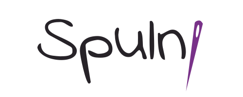
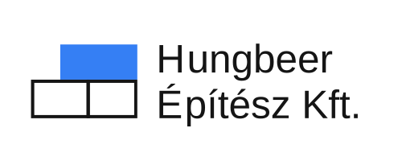
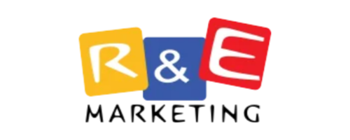
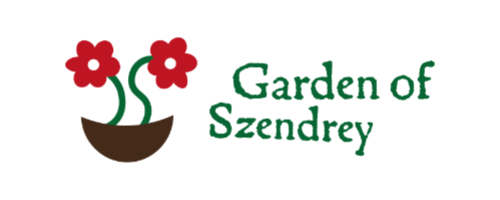
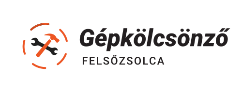
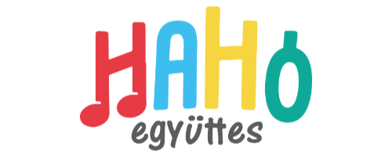
Teljes céges megjelenés a nulláról kis- és középvállalkozásoknak. Nem csak egy logót kapsz, hanem egy olyan egységes, bizalomgerjesztő rendszert, ami kiemel a versenytársak közül.
Mik tartoznak ide?
Logó, színvilág és betűtípusok meghatározása, névjegykártya, levélpapír, közösségi média sablonok, és egy arculati kézikönyv, ami összefogja ezeket.
Már működő cégeknek, akik kinőtték a jelenlegi megjelenésüket, vagy pontosan tudják, mit NEM akarnak. Megőrizzük, ami eddig is érték volt a márkádban, és modernizáljuk azt, ami már visszahúz.
Mik tartoznak ide?
Régi logó újratervezése, elavult dizájnok lecserélése, új arculati elemek bevezetése, meglévő offline anyagok (molinók, szórólapok, járműdekoráció) frissítése az új stílusban.
A sikeres arculat alapja. Mielőtt bármit is megrajzolnánk, tisztázzuk a pontos irányt: kinek szól a céged, mit ígér, és miben más, mint a többiek. Ebből derül ki, milyen vizuális nyelven kell beszélnünk a vevőidhez.
Mik tartoznak ide?
Célközönség vizuális meghatározása, versenytársak elemzése, hangulattáblák (moodboardok) készítése, és a kreatív koncepció vagy vizuális iránytű felállítása.
A céged arculatára építve megtervezem az online otthonodat. Olyan letisztult, logikus és felhasználóbarát felületeket hozok létre, ami nem csak jl néz ki, de élmény használni – és ami a legfontosabb: vevőket hoznak (konvertálnak).
Mik tartoznak ide?
Bemutatkozó weboldalak, webshop felületek, érkező oldalak (landing page-ek), mobilra optimalizált (reszponzív) nézetek, gombok és navigációs menük megtervezése.
Meglévő megjelenésed szakértői áttekintése. Kívülálló, profi szemmel nézem át a jelenlegi anyagaidat. Feltérképezem a gyenge pontokat, ahol ügyfeleket veszíthetsz, és konkrét lépéseket javaslok a javításra.
Mik tartoznak ide?
Weboldalad használhatóságának (UX) tesztelése, arculati hibák keresése, a vizuális kommunikációd egységességének vizsgálata, és egy részletes javaslatcsomag a továbblépéshez. Plusz egy szubjektív vélemény tőlem ha szeretnéd. :)
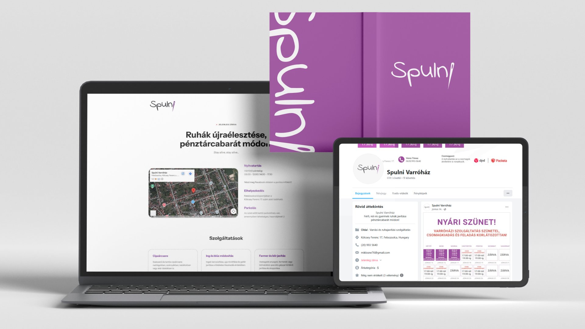
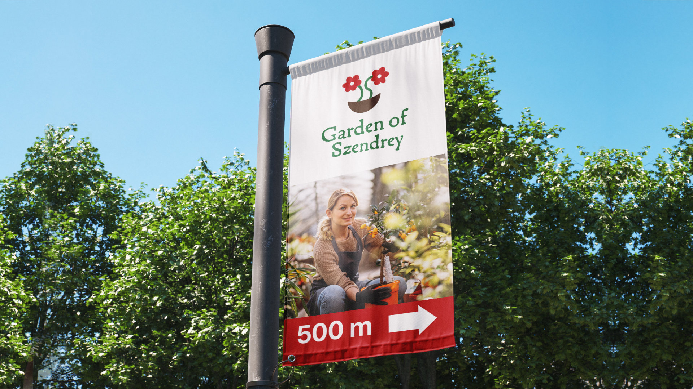
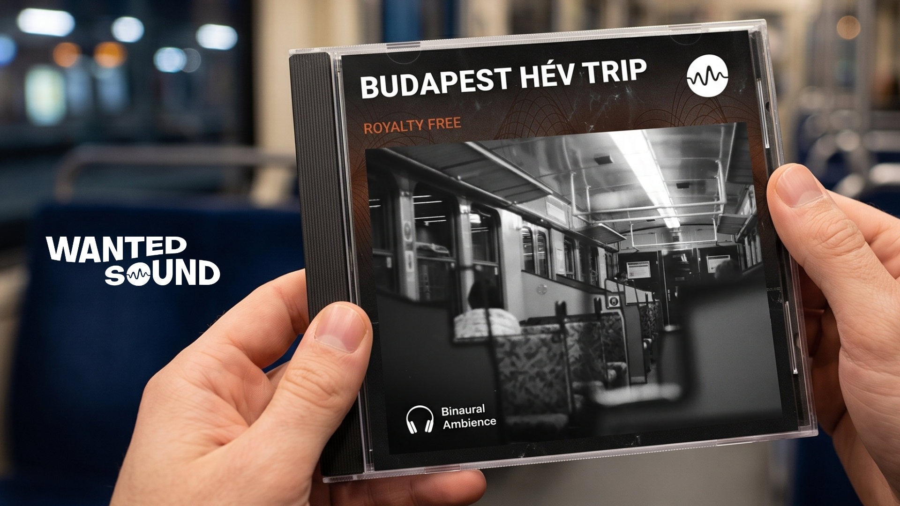
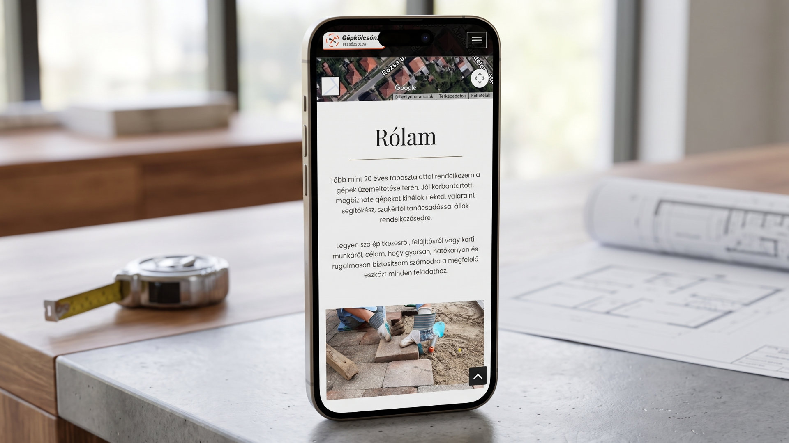
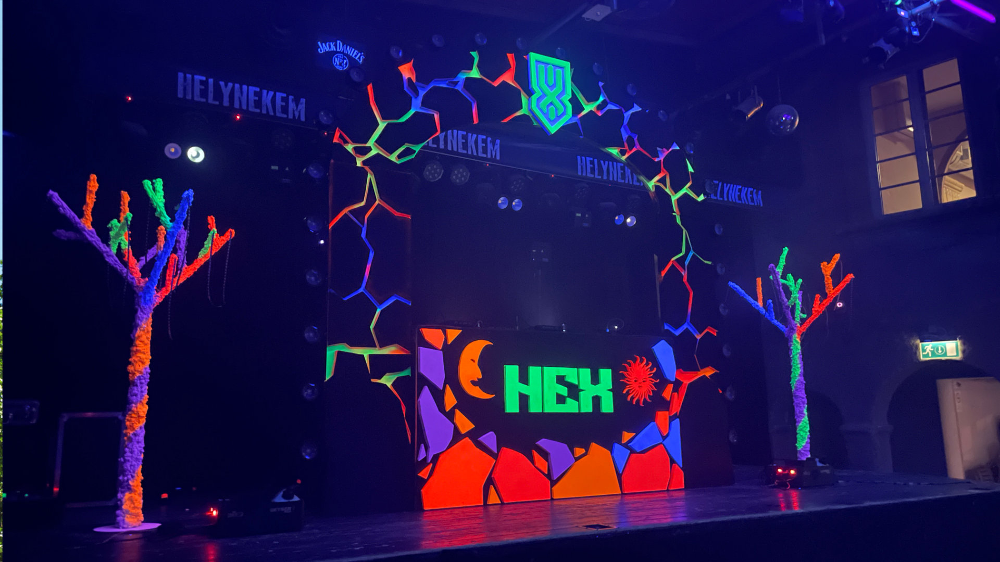
Kolumbán Szabolcs vagyok, Grafikus & Visual artist. Hiszek a jó kommunikációban, így ha kezdettől fogva Veled dolgozom akkor együtt egy szuper dolgot tudunk létrehozni. Erősségem, hogy tudok rajzolni így ha van digitálisan nem kivitelezhető víziód első körben akkor azt gyorsan le tudom skiccelni és egyből látjuk a végeredményt.
Bízom benne, hogy akár digitális akár famentes, maszatos az a bizonyos első lap, meg tudunk egyezni és létre tudunk hozni valami egészen jót, ami nem "csak tetszik" hanem valóban működik is.
Beszéljünk a projektedről! Hívj fel, vagy dobj egy emailt, és nézzük meg, hogyan tudunk együttműködni.